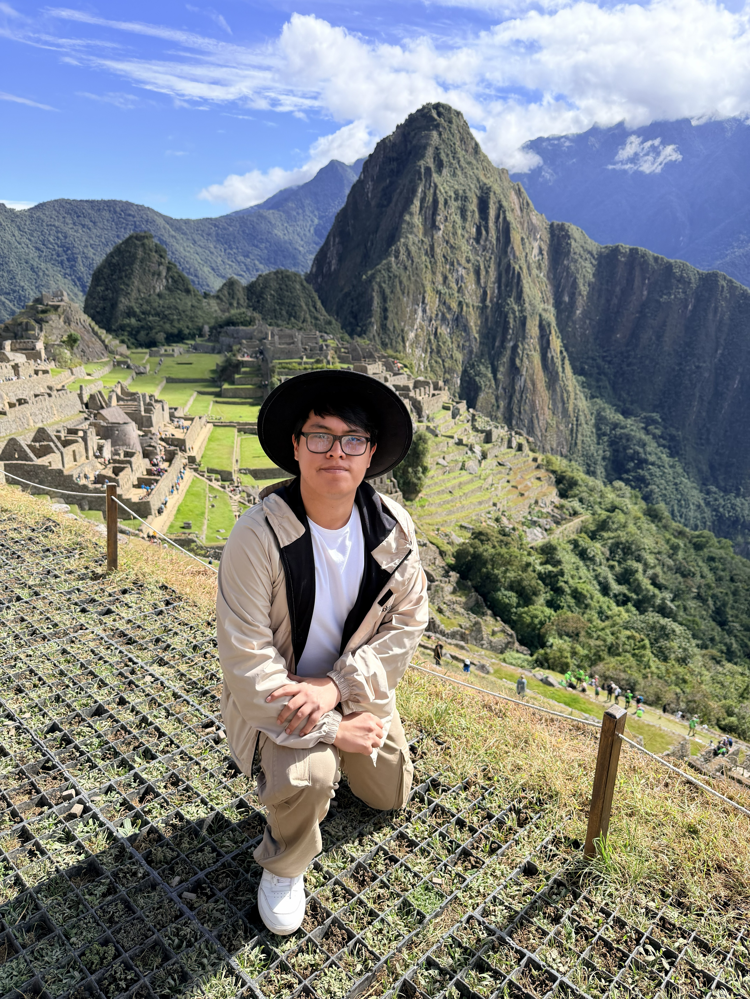

Hola, bienvenido!
Soy un profesional apasionado por la tecnología, la innovación y la gestión de proyectos. Me motiva transformar ideas y necesidades de negocio en soluciones digitales que generen un impacto real.
Puedes contactarme en:

Sobre mí
Me llamo Martin Alexander Leiva Macetas, soy una persona interesada en la tecnología y en cómo esta puede ayudar a resolver problemas y mejorar la forma en que hacemos las cosas. Durante mi experiencia profesional he podido participar en diferentes proyectos digitales, trabajando de cerca con equipos de negocio y tecnología. Me considero una persona responsable, curiosa y orientada a aprender constantemente. Me gusta asumir nuevos retos, trabajar en equipo y buscar soluciones que generen valor. Entre mis principales intereses se encuentran la gestión de proyectos, la inteligencia artificial, la transformación digital y el desarrollo de soluciones tecnológicas.
- Edad: 27 años
- Ciudad: Lima, Perú
- Correo: mleivamacetas@gmail.com
- Teléfono: (+51) 962 236 572
Algunos de mis pasatiempos favoritos son:
Mis Habilidades
Experiencia Profesional
Business Specialist
Empresa dedicada al rubro de seguros y reaseguros
- Lidero un equipo multidisciplinario (Backend, QA, Arquitecto, DevOps, entre otros) en las distintas iniciativas estratégicas que se van priorizando según el impacto que generen en la compañía, cumpliendo con el time to market en cada proyecto.
- Me encuentro a cargo de iniciativas de evolución y mejora del CRM Oracle Sales & Service (Oracle CX Cloud), incluyendo cambios y adecuaciones sobre la interfaz Redwood. Coordino con equipos multidisciplinarios y diferentes Tribus para gestionar requerimientos, evaluar impactos y articular integraciones, buscando asegurar la correcta implementación de las soluciones y su alineación con las necesidades del negocio.
- Coordino activamente con las distintas Tribus de la compañía respecto a las APIs y microservicios de las cuales somos owners como Squad para su integración con los distintos activos que requieren reutilizar nuestras soluciones tecnológicas.
- Capacito constantemente a los ejecutivos de postventa debido a las mejoras implementadas en el CRM, asegurando un manejo eficiente y fortaleciendo la adopción de las nuevas funcionalidades.
- Participé del programa “Houses of Knowledge” de Pacífico Seguros que busca capacitar y perfeccionar las habilidades de los colaboradores mediante el uso de tecnologías emergentes, formando parte de la línea de especialización en Inteligencia Artificial que nos reta a construir una solución transversal que aporte significativamente a la compañía.
Analista CRM
Empresa dedicada al rubro de seguros y reaseguros
- Lideré el equipo de Soporte Salesforce de RIMAC Seguros y Reaseguros teniendo como objetivo el implementar mejoras y resolver incidentes en las distintas nubes de Salesforce como Sales Cloud, Service Cloud y Marketing Cloud.
- Realicé el seguimiento y análisis de indicadores clave de venta y postventa, evaluando el impacto de las mejoras implementadas en los procesos para asegurar su efectividad y proponer nuevas acciones de implementación.
- Estuve a cargo de proyectos para la optimización de procesos del área de postventa (Service Cloud) para la derivación de prospectos al área de ventas (Sales Cloud), así como la integración de la información de los sistemas Core de la compañía a la nube de Service Cloud.
- Capacité a más de 500 asesores de postventa y canales de Fuerza de Ventas, buscando siempre garantizar la correcta adopción de procesos y herramientas implementadas por proyectos o mejoras.
- Coordiné y definí las mejoras en los distintos flujos conversacionales del chatbot de la compañía, aplicando tecnologías basadas en IA como el NLP para optimizar la experiencia del usuario y la eficiencia del servicio.
Analista de Soporte Tecnológico e Inteligencia Comercial
Empresa dedicada al rubro de seguros y reaseguros
- Trabajé con las mesas ágiles de un sistema ROPO y los eCommerce a través de la identificación de oportunidades de mejora, optimizando procesos y realizando las mediciones correspondientes de las mejoras desarrolladas como el tiempo del ciclo de las actividades, tiempo de respuesta de los servicios, entre otros.
- Realicé múltiples capacitaciones a las redes comerciales digitales y tradicionales para que puedan hacer uso de la web y del app de la Plataforma Comercial de Referidos para el correcto uso de sus módulos y las mejoras implementadas con la mesa ágil.
- Desarrollé reportes diarios para el área de Negocio Digital generando indicadores de valor que pudieran ser visualizados mediante dashboards dinámicos y automatizados con distintas herramientas digitales como Power Automate.
- Suministré apoyo al área de Digital Growth respecto a un proyecto ETL para el procesamiento de data trascendental que facilitó el planteamiento de estrategias de acción para la toma de decisiones mediante los principios de las 5S.
- Gestioné proyectos con el área de Marketing Digital y TI para la conexión de un API de registro de leads digitales a través de landings pages y/o formularios internos del corporativo de MAPFRE España.
Practicante en el área de Negocio Digital y Transformación
Empresa dedicada al rubro de seguros y reaseguros
- Trabajé con KPIs para medir el cumplimiento, efectividad y productividad de las redes comerciales digitales para identificar falencias y aplicar acciones de control.
- Desarrollé darshboards comerciales que permitieron tomar decisiones frente a la ausencia de una correcta gestión de leads digitales, que impactaba directamente con la inversión de la pauta digital.
- Brindé soporte en la generación de reportes e informes de los distintos proyectos digitales y/o pilotos del área, así como también al seguimiento de los mismos.
- Apoyé en el manejo de las mesas ágiles utilizando la metodología Scrum y desenvolviéndome como Product Owner frente al equipo de trabajo y la SCRUM Master, para así generar mejoras de los sistemas utilizados, pensados para el usuario final.
- Participé en la identificación y automatización de procesos comerciales mediante herramientas digitales, contribuyendo a la eficiencia operativa y reducción de tiempos manuales en la gestión de leads y seguimiento de resultados.
Practicante en el área de Transformación Digital
Empresa dedicada al rubro de seguros y reaseguros
- Colaboré en la gestión de la Plataforma Comercial de Referidos (CRM de la compañía) cumpliendo con los requerimientos de las distintas redes comerciales digitales.
- Generé propuestas de valor en proyectos del área, identificando oportunidades de mejora continua e impulsando cambios en coordinación con TI.
- Participé de los distintos proyectos del área a través de la generación de ideas y propuestas de valor que permitieron identificar oportunidades de mejora continua.
- Participé en mesas ágiles bajo metodología SCRUM, desempeñando un rol de Product Owner en iniciativas orientadas al usuario final.
- Contribuí en la creación de un gestor de tareas utilizando herramientas digitales como Bizagi Modeler y Power Apps.